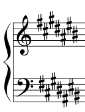
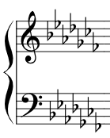

Alteraciones
| Alteración | Descripción | Símbolo |
|---|---|---|
| Sostenidos | Le suben a la nota un semitono. | # |
| Bemoles | Le bajan a la nota un semitono. | ♭ |
| Doble Sostenido | Le suben a la nota dos semitonos. | 𝄪 |
| Doble Bemol | Le bajan a la nota dos semitonos. | ♭♭ |
| Becuadro | Anula el efecto de cualquier alteración. | ♮ |
Orden de las alteraciones:
| Alteración | Órden | Imagen |
|---|---|---|
| Sostenidos | Fa-Do-Sol-Re-La-Mi-Si |  |
| Bemoles | Si-Mi-La-Re-Sol-do-fa |  |
Tipos de Alteraciones
| Alteración | Descripción |
|---|---|
| Propia | Cuando va junto a la clave, es decir, cuando pertenece a la armadura de clave. |
| Accidental | Va delante de una nota determinada y altera todas las notas del mismo nombre que se encuentren en el mismo compas. |
| De Precaución | Cuando la alteración aparece delante de una nota determinada recalcando la validez de una alteración anterior. |